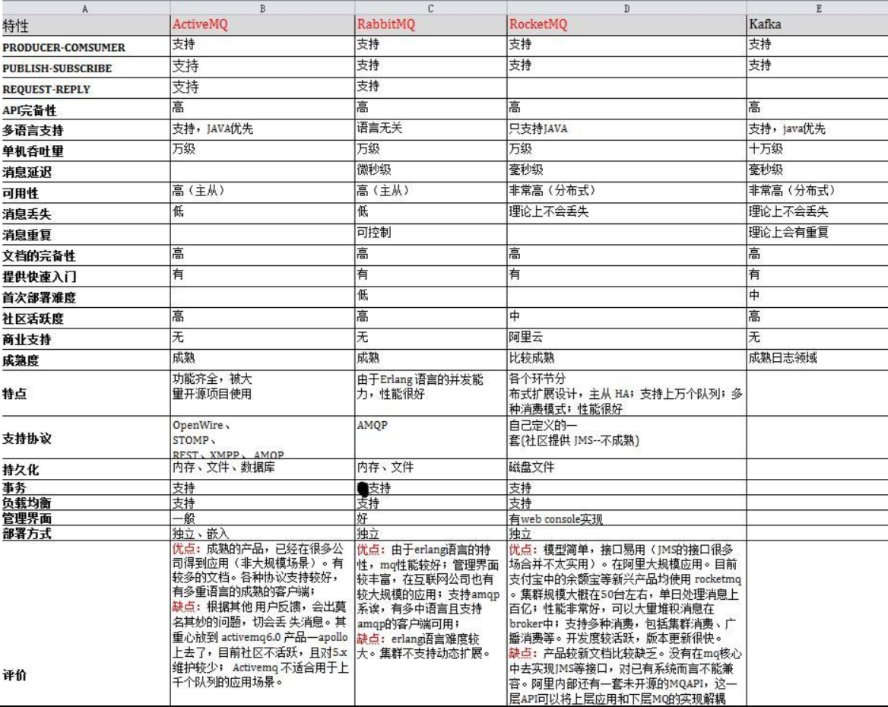

为什么要使用消息队列
解耦
传统模式：系统间耦合度强 如系统A直接调用系统B系统C的代码，如果再有系统D接入，则系统A还要修改代码。
中间件模式：系统A将消息写入消息队列，系统B、系统C 订阅消息队列，如果再有系统D介入，直接订阅消息队列即可 系统A不必修改代码。
异步
传统模式：一些非必的业务逻辑以同步得方式运行浪费时间。
中间件模式：将消息写入消息队列 一些非必要的业务逻辑以异步得方式运行提高响应速度。
削峰/限流
传统模式：并发量大得时候所有请求全部到数据库，造成数据库连接异常。
中间件模式：系统按照数据库能处理得并发量从消息队列中慢慢拉取消息。在生产环境中这种短暂得高峰期积压是允许的。
消息队列的使用场景
消息队列常见的使用场景很多，比较核心的有3个：解耦、异步、削峰。
什么是RabbitMQ
即一个消息队列，主要是用来实现应用程序的异步和解耦，同时也能起到消息缓冲，消息分发的作用。RabbitMQ使用的是AMQP协议，它是一种二进制协议
AMQP，即Advanced Message Queuing Protocol(高级消息排队协议),一个提供统一消息服务的应用层标准高级消息队列协议,是应用层协议的一个开放标准,为面向消息的中间件设计。基于此协议的客户端与消息中间件可传递消息，并不受客户端/中间件不同产品，不同的开发语言等条件的限制。
为什么使用RabbitMQ
这里涉及一个消息中间件选型的问题

| 特性 | ActiveMQ | RabbitMQ | RocketMQ | kafka |
|---|---|---|---|---|
| 开发语言 | java | erlang | java | scala |
| 单机吞吐量 | 万级 | 万级 | 10万级 | 10万级 |
| 时效性 | ms级 | us级 | ms级 | ms级以内 |
| 可用性 | 高(主从架构) | 高(主从架构) | 非常高(分布式架构) | 非常高(分布式架构) |
| 功能特性 | 成熟的产品，在很多公司得到应用；有较多的文档；各种协议支持较好 | 基于erlang开发，所以并发能力很强，性能极其好，延时很低;管理界面较丰富 | MQ功能比较完备，扩展性佳 | 只支持主要的MQ功能，像消息查询，消息回溯等功能没有提供，在大数据领域应用广泛 |
- 中小型软件公司，建议选
RabbitMQ.一方面，erlang语言天生具备高并发的特性，而且他的管理界面用起来十分方便。正所谓，成也萧何，败也萧何！他的弊端也在这里，虽然RabbitMQ是开源的，然而国内有几个能定制化开发erlang的程序员呢？所幸，RabbitMQ的社区十分活跃，可以解决开发过程中遇到的bug，这点对于中小型公司来说十分重要。不考虑rocketmq和kafka的原因是，一方面中小型软件公司不如互联网公司，数据量没那么大，选消息中间件，应首选功能比较完备的，所以kafka排除。不考虑rocketmq的原因是，rocketmq是阿里出品，如果阿里放弃维护rocketmq，中小型公司一般抽不出人来进行rocketmq的定制化开发，因此不推荐 - 大型软件公司，根据具体使用在rocketMq和kafka之间二选一。一方面，大型软件公司，具备足够的资金搭建分布式环境，也具备足够大的数据量。针对rocketMQ,大型软件公司也可以抽出人手对rocketMQ进行定制化开发，毕竟国内有能力改JAVA源码的人，还是相当多的。至于kafka，根据业务场景选择，如果有日志采集功能，肯定首选kafka
具体该选哪个，应该根据实际场景考虑，不能为了用而用
使用消息队列的缺点
系统可用性降低：本来其他系统只要运行好好的，那你的系统就是正常的。现在加了消息队列进去，那消息队列挂了，你的系统也就挂了。因此，系统可用性降低
系统复杂性增加：要多考虑很多方面的问题，比如一致性问题、如何保证消息不被重复消费，如何保证保证消息可靠传输。因此，需要考虑的东西更多，系统复杂性增大
如何实现高可用
参考：搭建RabbitMQ高可用集群
重要角色有哪些
生产者：消费的创建者，负责创建和推送数据到消息服务器
消费者：消息的接收方，用于处理数据和确认消息
代理：指RabbitMQ本身，本身不生产消息，只扮演“快递”的角色
重要组件有哪些
ConnectionFactory（连接管理器）：应用程序与Rabbit之间建立连接的管理器，程序代码中使用
Channel（信道）：消息推送使用的通道
Exchange（交换器）：用于接收，分配消息
Queue（队列）：用于存储生产者的消息
RoutingKey（路由键）：用于把生产者的数据分配到交换器上
BindingKey（绑定键）：用于把交换器的消息绑定到队列上
vhost作用
每个RabbitMQ都能创建多个vhost，称为虚拟主机，每个虚拟主机都是mini版的RabbitMQ，它拥有自己的队列，交换器和绑定，拥有自己的权限机制。
消息如何发送
首先客户端必须连接到RabbitMQ服务器才能发布和消费消息，客户端和 rabbit server 之间会创建一个tcp连接，一旦tcp打开并通过了认证（认证就是你发送给rabbit服务器的用户名和密码），你的客户端和 就创建一条 amqp 信道（channel），信道是创建在“真实”tcp上的虚拟连接，amqp命令都是通过信道发送出去的，每个信道都会有唯一的id，不论是发布消息，订阅队列都是通过这个信道完成。
怎么保证消息可靠性
从三个角度分析：生产者弄丢数据 消息队列弄丢数据 消费者弄丢数据。
生产者丢失数据
提供 Transacton 和 confirm 机制来确保生产者不丢消息。
Transacton: 发消息前开启事务（channel.txSelect()),然后发送消息，如果发送过程中有什么异常，事务就会回滚（channel,txRollback()),如果发送成功则提交事务（channel.txCommit()).然而缺点是吞吐量下降了。因此生产用confirm模式居多。一但channel 进入confirm 模式，所有该信道上面发送的消息都将会指派一个唯一的ID（从1开始），一但消息被投递到所有匹配的队列之后，rabbitMQ就会发送一个ACK给生产者（包含消息的唯一ID),这就使生产这知道消息已经到达消息队列了。如果RabbitMQ没有处理该消息，则会发送一个Nack消息给你，你可以进行重试操作。
消息队列丢失数据
处理消息队列丢失数据的情况，一把是开启持久化磁盘的配置。这个持久话配置可以和 confirm 机制配合使用，你可以在持久化磁盘之后，再给生产这发送一个Ack信号。这样如果持久化磁盘之前，rabbitMQ阵亡了，那么生产者收不到Ack信号，生产者会自动重发。
持久化一般分两步
- 将
queue的持久化标识durable设置为true,则代表一个持久化队列 - 发送消息的时候将
deliveryMode=2
这样设置之后，rabbitMQ就算挂掉了，重启后也能恢复数据。
消费者丢数据
消费者丢数据一般是因为采用了自动确认消息模式，这种模式下，消费者会自动确认收到信息。这时rabbitMQ会立即将消息删除，这种情况下如果消费者出现异常而没能处理该消息，就会丢失该消息。
解决方案：采用手动确认消息即可，在处理完消息后才发送 ack
怎么避免消息丢失
将数据写到消息队列上，系统B和C还没来得及取消息队列的数据，就挂掉了。如果没有做任何的措施，数据就丢了，这时候就要考虑数据的持久化，磁盘、数据库、Redis等，是同步存储还是异步存储。
消息持久化成功的条件
- 声明队列必须设置持久化
durable设置为true - 消息推送投递模式必须设置持久化，
deliveryMode设置为2（持久） - 消息已经到达持久化交换器
- 消息已经到达持久化队列
持久化有什么缺点
持久化的缺点就是降低了服务器的吞吐量，因为使用的是磁盘而非内存存储，从而降低了吞吐量。可使用SSD硬盘来缓解吞吐量的问题。
有几种广播类型
direct（默认）：最基础最简单的模式，发送方把消息发送给订阅方，如果有多个订阅者，默认采用轮询的方式进行消息发送headers：与direct类似，只是性能很差，实际开发使用很少fanout：分发模式，把消费分发给所有订阅者topic：匹配订阅模式，使用正则匹配到消息队列，能匹配到的都能接收到
延迟消息队列如何实现
消息过期后进入死信交换器，再由交换器转发到延迟消费队列，实现延迟功能，使用 RabbitMQ-delayed-message-exchange 插件实现延迟功能。
集群有什么用
高可用：某个服务器出现问题，整个RabbitMQ还可以继续使用
高容量：集群可以承载更多的消息量
节点的类型有哪些
磁盘节点：消息会存储到磁盘
内存节点：消息都存储到内存中，重启服务器消息丢失，性能高于磁盘类型
集群搭建需要注意哪些问题
- 各节点之间使用
-link连接，此属性不能忽略 - 各节点使用的
erlang cookie值必须相同，此值相当于“秘钥”的功能，用于各节点的认证 - 整个集群必须包含一个磁盘节点
节点拷贝问题
每个节点是其他节点的完整拷贝吗?为什么
不是，原因有以下两个：
- 存储空间的考虑：如果每个节点都拥有所有队列的完全拷贝，这样新增节点不但没有新增存储空间，反而增加了更多的冗余数据
- 性能的考虑：如果每条消息都需要完整拷贝每一个集群节点，那新增节点并没有提升处理消息的能力，最多是保持和单节点相同的性能甚至更糟
集群中唯一磁盘节点崩溃会发生什么情况
如果唯一磁盘的磁盘节点崩溃，不能进行以下操作：
- 不能创建队列
- 不能创建交换器
- 不能创建绑定
- 不能添加用户
- 不能更改权限
- 不能添加和删除集群节点
唯一磁盘节点崩溃了，集群是可以保持运行的，但不能更改任何东西。
集群节点停止顺序
对集群的停止的顺序是有要求的，应该先关闭内存节点，最后关闭磁盘节点。如果顺序恰好相反的话，可能造成消息的丢失。
Kafka与RabbitMQ
应用场景方面
RabbitMQ：用于实时的，对可靠性要求较高的消息传递上
kafka：用于处于活跃的流式数据，大数据量的数据处理上
架构模型方面
producer，broker，consumer
RabbitMQ：以broker为中心，有消息的确认机制
kafka：以consumer为中心，无消息的确认机制
吞吐量方面
RabbitMQ：支持消息的可靠的传递，支持事务，不支持批量操作，基于存储的可靠性的要求存储可以采用内存或硬盘，吞吐量小
kafka：内部采用消息的批量处理，数据的存储和获取是本地磁盘顺序批量操作，消息处理的效率高，吞吐量高
集群负载均衡方面
RabbitMQ：本身不支持负载均衡，需要loadbalancer的支持
kafka：采用zookeeper对集群中的broker，consumer进行管理，可以注册topic到zookeeper上，通过zookeeper的协调机制，producer保存对应的topic的broker信息，可以随机或者轮询发送到broker上，producer可以基于语义指定分片，消息发送到broker的某个分片上。
kafka通过zk和分区机制实现：zk记录broker信息，生产者可以获取到并通过策略完成负载均衡；通过分区，投递消息到不同分区，消费者通过服务组完成均衡消费